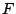

The relative priority of two functions is defined in the `context-free priorities' section by including  > , where and are as written in the context-free grammar. Functions with a higher priority bind more strongly than functions with lower priorities and the nodes corresponding to them should thus appear at lower levels in the tree than nodes corresponding to functions with lower priorities. Lists of functions may be used in a priority declaration: > {, } is an abbreviation for > , > . Note that this tells us nothing about the priority relation between and .